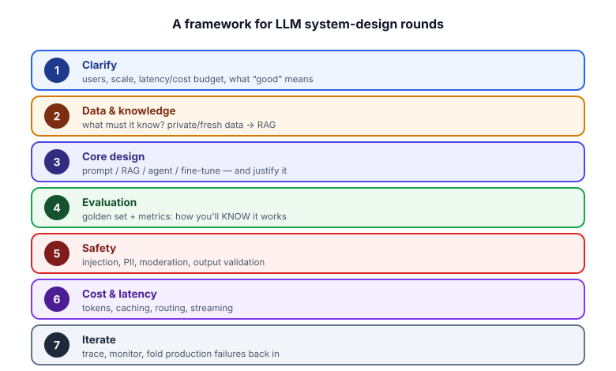
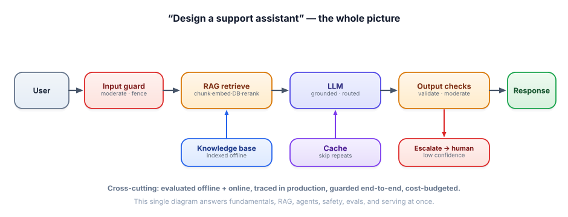

System design rounds
A GenAI system-design round asks you to design a whole product, like a support assistant, out loud on a whiteboard.
It differs from classic system design because the model is probabilistic, costs money per token, and can be wrong.
So interviewers listen for evaluation, failure modes, cost, latency and safety, not just boxes and arrows.
A seven-step framework keeps you in order under pressure: clarify, data, core design, evaluation, safety, cost and latency, iterate.
Always clarify first: who uses it, at what scale, and what “good” means.
It is like an architect asked to design a house. A good one first asks who will live there and what the budget is. Then the foundations, then the rooms, then the inspection, the fire code and the running costs, and a plan for what to fix after the family moves in.
| In the picture | In the real system |
|---|---|
| Who lives there, and the budget | Clarify: users, scale, latency and cost budget, what “good” means |
| Foundations | Data and knowledge: private or changing facts mean RAG |
| The rooms | Core design: prompt, RAG, agent or fine-tune, justified |
| The inspection and the fire code | Evaluation (golden set + metrics) and safety (injection, PII, output checks) |
| Running costs, and fixing things after move-in | Cost and latency (caching, routing, streaming), then iterate from traces |
Where the picture breaks. A house is inspected once and stays the same. An LLM system gives different answers to the same kind of question, so you inspect it on every change and keep inspecting in production.
Pick one of the three design prompts this page uses. The same seven layers stay; watch which ones change, and how.
Going deeper
The GenAI system-design interview is its own skill. You’re no longer designing deterministic CRUD apps — you’re designing probabilistic data flows where quality, cost, and failure modes are first-class. A simple framework keeps you structured under pressure and hits everything interviewers want.
What makes LLM system design different
Classic system design optimizes for consistency, throughput, and storage. LLM system design adds new axes the interviewer is specifically listening for: quality/evaluation (how do you know it works?), hallucination and failure modes, cost of inference (it’s expensive and per-token), latency, and safety. A candidate who only draws boxes-and-arrows misses the point; the signal is reasoning about the probabilistic, expensive, fallible nature of the model.

- Clarify. Who uses it, at what scale, with what latency/cost budget — and what does “good” mean? Never start drawing before you’ve scoped this.
- Data & knowledge. What must it know? If that’s private or changing facts, you need RAG (and you’ll discuss the data pipeline).
- Core design. Pick the approach — prompt, RAG, agent, fine-tune — and justify it against the requirements.
- Evaluation. How will you know it works? Golden set + metrics. Bring this up unprompted.
- Safety. Injection, PII, content moderation, output validation — proportional to the risk.
- Cost & latency. Token budget, caching, routing, streaming — show you can make it affordable and fast.
- Iterate. Tracing, monitoring, folding production failures back into evals — the flywheel.
Worked example — “Design a customer-support assistant”
Apply the framework, narrating as you draw. The architecture you arrive at synthesizes the whole course:

Clarify: “Internal or customer-facing? Expected volume? Latency target? Does it take actions like refunds, or just answer? What’s the cost ceiling?” — say it can answer from our help docs, ~50k/day, <2s perceived, no money-moving actions in v1.
Data: “It needs current product/policy knowledge — that’s private and changing, so RAG: ingest docs, chunk with overlap + metadata, embed, store in a vector DB; re-index on doc changes.”
Core: “Per query: input moderation → hybrid retrieve + rerank → grounded prompt (answer only from context, cite) → LLM. Route easy queries to a small model, hard ones to a bigger one.”
Eval: “Golden set of real questions; retrieval recall@k/MRR, generation faithfulness/correctness via LLM-judge; gate changes in CI; A/B online.”
Safety: “Fence user input as data, moderate in/out, validate output, redact PII in logs; since v1 takes no actions, the blast radius is small.”
Cost/latency: “Cache repeats (big win), stream the answer, cap output, trim retrieved context.”
Iterate: “Trace every request; mine failures into the golden set; escalate low-confidence answers to a human.”
- LLM system design adds quality/eval, hallucination, cost, latency, and safety to classic design.
- Use the framework: clarify → data → core design → eval → safety → cost/latency → iterate.
- Always clarify scope first (users, scale, budget, “good”) before drawing.
- Bring up evaluation and failure modes unprompted — it’s the strongest seniority signal.
- One support-assistant-style architecture demonstrates the entire stack in a single diagram.
In an LLM system-design round, what most distinguishes a senior answer from a junior one?
In a GenAI system-design round, what should you define early?
1. Apply the framework to “design a tool that answers questions about a company’s codebase.” What changes vs. the support assistant?
2. The interviewer says “now it should also be able to open pull requests.” How does your design change?
3. What’s the first question you ask before designing any LLM system, and why?
▸ Show solutions & reasoning
1. Same skeleton (RAG + grounding + eval + serving), but the data step changes: code needs structure-aware chunking (function/class boundaries, keep imports), and retrieval benefits from hybrid search (exact symbol names matter — dense alone blurs identifiers). Evaluation uses code-specific golden questions. Still no actions, so safety is mainly input/output handling and not leaking private code in logs.
2. It becomes an agent that takes an irreversible-ish action, so safety jumps to the front: least-privilege tools, validate the generated diff, never auto-merge — open a PR for human review (human-in-the-loop is natural here), sandbox any code execution, and treat repo content as untrusted (injection). I’d also bound the loop and log every action. The action changes it from a Q&A system to a guarded, action-taking one — and I’d call that out.
3. “What does good look like, and at what scale/latency/cost?” — i.e., clarify requirements. Without it you can’t choose the right approach (prompt vs RAG vs agent), can’t define an eval, and might over- or under-engineer. Every other decision flows from the requirements, so scoping first is non-negotiable — and demonstrating that discipline is itself a strong signal.
The most efficient interview prep — and the consensus advice for 2026 — is to build one production-quality end-to-end project, typically a RAG application, and know it inside out. Why it’s so powerful: a single well-built project simultaneously answers fundamentals (you used tokens, embeddings, sampling), RAG architecture (you designed chunking, retrieval, reranking, grounding), system design (you can whiteboard exactly what you built and how you’d scale it), evaluation (you wrote a golden set and metrics — the rarest and most impressive piece), safety (you handled injection and PII), serving (you measured cost and latency), and behavioral stories (real decisions, trade-offs, and a bug you fixed). One project, every round.
So in a system-design round, anchor to that project: “I built exactly this — here’s how I’d evolve it for your scale.” It turns abstract design into concrete experience and lets you discuss real trade-offs you actually made, which is far more convincing than hypotheticals. Two delivery habits seal it: think out loud (the interviewer is grading your reasoning, so narrate the trade-offs, not just the conclusion), and state assumptions and ask when scope is unclear rather than guessing. Combine the framework, the one-project anchor, and visible trade-off reasoning, and you’ll handle any LLM system-design round — which is exactly the skill the Capstones (Track 14) are designed to give you.
Many roles test the same skills asynchronously, through a take-home. Let’s make sure yours stands out. Next: take-home patterns.
In one line: Clarify first, then walk data, design, evals, safety, cost and iteration, out loud and in order.